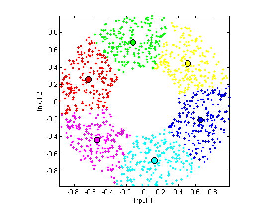

kMeansClustering
VQ (vector quantization) of K-means clustering using Forgy's batch-mode method
Contents
Syntax
- center = kMeansClustering(data, clusterNum)
- [center, assignment, distortion, allCenter] = kMeansClustering(data, clusterNum, plotOpt)
Description
center = kMeansClustering(data, clusterNum, plotOpt) returns the centers after k-means clustering, where
- data (dim x dataNum): data set to be clustered; where each column is a sample data
- clusterNum: number of clusters (greater than one), or matrix of columns of centers
- plotOpt: 1 for animation if the dimension is 2
- center (dim x clusterNum): final cluster centers, where each column is a center
[center, assignment, distortion, allCenter] = kMeansClustering(data, clusterNum, plotOpt) also returns assignment and distortion, where
- assignment: final assignment matrix, with assignment(i,j)=1 if data instance i belongs to cluster j
- distortion: values of the objective function during iterations
Example
DS=dcData(2); centerNum=6; plotOpt=1; [center, assignment, distortion] = kMeansClustering(DS.input, centerNum, plotOpt);
Iteration count = 1/200, distortion = 213.591170 Iteration count = 2/200, distortion = 103.075632 Iteration count = 3/200, distortion = 93.313835 Iteration count = 4/200, distortion = 90.977813 Iteration count = 5/200, distortion = 90.324017 Iteration count = 6/200, distortion = 90.042980 Iteration count = 7/200, distortion = 89.931857 Iteration count = 8/200, distortion = 89.881969 Iteration count = 9/200, distortion = 89.842573 Iteration count = 10/200, distortion = 89.787264 Iteration count = 11/200, distortion = 89.702380 Iteration count = 12/200, distortion = 89.580826 Iteration count = 13/200, distortion = 89.425224 Iteration count = 14/200, distortion = 89.238788 Iteration count = 15/200, distortion = 89.132281 Iteration count = 16/200, distortion = 89.036368 Iteration count = 17/200, distortion = 88.924723 Iteration count = 18/200, distortion = 88.787789 Iteration count = 19/200, distortion = 88.638583 Iteration count = 20/200, distortion = 88.624424 Iteration count = 21/200, distortion = 88.612302 Iteration count = 22/200, distortion = 88.606979 Iteration count = 23/200, distortion = 88.592142 Iteration count = 24/200, distortion = 88.581829 Iteration count = 25/200, distortion = 88.573063 Iteration count = 26/200, distortion = 88.569138 Iteration count = 27/200, distortion = 88.567880 Iteration count = 28/200, distortion = 88.567880